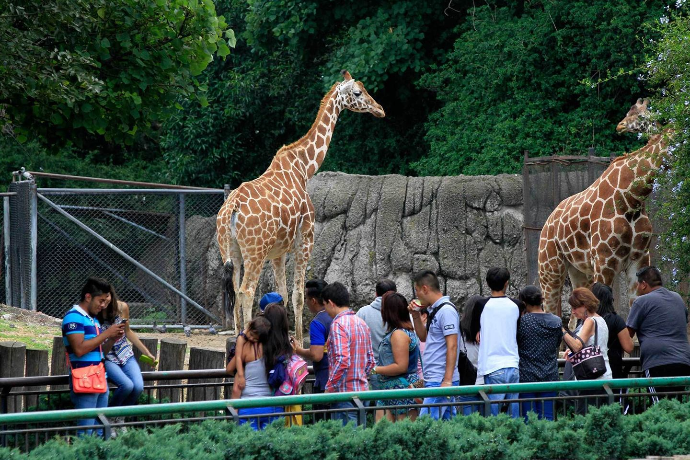

Descubra um mundo de biodiversidade!
Venha explorar a vida selvagem e
conhecer o fascinante mundo da biodiversidade no BioZoo Rio!
Aqui, você terá a oportunidade única de conhecer de perto diversas espécies de animais, entender seus habitats naturais e
aprender sobre a importância da preservação da vida selvagem.
Em cada canto do zoológico, há uma nova história para explorar, desde os majestosos felinos até as aves mais exóticas. Venha viver essa
experiência inesquecível e mergulhe no incrível universo da natureza!.